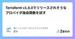

ソーシャルデータバンク テックブログのフィード
https://zenn.dev/p/sdb_blog
ソーシャルデータバンク株式会社の開発チームです。インフラ、品質、UI/UX、DevOpsなど様々な活動に取り組んでいます。
フィード
機能廃止という痛みを伴う仕事 1
1
ソーシャルデータバンク テックブログのフィード
はじめに初めまして、ソーシャルデータバンク企画チームの塩浦です。機能廃止という仕事は痛みを伴います。新機能を出すことの3倍くらいの労力と根気が必要な作業です。一方で、常に向き合い続けていくべき、価値のある仕事だと思っています。私も何度か（そして現在進行形で）機能廃止の開発を行なっています。備忘的に、機能廃止開発に取り組む中での苦労や学びを記事にしておこうと思います！ なぜ機能廃止するのかそもそも、なぜわざわざ機能を廃止しなければならないのでしょうか？弊社では次のようなパターンがありました。費用対効果が低い(ex)利用率は低いのに、データベースへの負荷が高くボ...
2日前
防げ! 情報流出! - レースコンディションについて
ソーシャルデータバンク テックブログのフィード
はじめに今回は、マルチスレッドプログラミングにおけるレースコンディション問題についてです。プログラマやエンジニアならば一度はこの問題を見聞きしたことがあるのではないでしょうか。説明のために簡略化されたレースコンディションのコードはよく見るし、その時は納得するのだけど、、実際の業務アプリケーションを書くときに意識できるのか、、、コードレビューを担当する際には問題を見つけることができるのか、、、、 サンプルアプリケーションコードなるべく小さく、でも実際の業務アプリケーションに近いようなサンプルコードを用意しました。以下は問題のあるサンプルコードです。どこに問題があるので...
5日前
Allowed memory size of *** bytes exhaustedエラーが出た！？
ソーシャルデータバンク テックブログのフィード
■ はじめにこんにちは。エンジニアの西崎です。最近、大規模なデータの一括操作でメモリ上限に達する問題あり、そちらの解決策について調べたので、記事にまとめていきたいと思います。Laravel を使用して大規模なデータセットを処理する際に、メモリ上限に達する問題を解決するための効果的な方法があります。この記事では、それぞれの方法を実際のサンプルコードとともに紹介します。 ■1. Eager Loading を使用する関連データを取得する際、Eager Loading を使用することで一度にまとめて取得するようクエリを最適化します。Eager Loading の最適化にはw...
5日前
Httpファサードを使って、外部APIのモックテストを作りたい！
ソーシャルデータバンク テックブログのフィード
インターン生の望月です。つい最近外部APIを使用する部分のテストを作成しました。テストを書き慣れていないことと、外部APIとの通信方法の部分がいまいち理解できていなかったこともあり苦戦しましたが、LaravelでのHttpファサードを用いたテスト方法を少し理解できたのでまとめてみようと思います。 0. 概要Http::fake()でモックできるのはHttpファサードを使用したリクエストのみ（GuzzleHTTPクライアントでのリクエストやリダイレクトはモックできないよ！）fakeメソッドで静的なAPIレスポンスを設定する場合には引数にarrayを、動的なAPIレスポンスを...
5日前
データ分析基盤を作る DBのS3エクスポート編
ソーシャルデータバンク テックブログのフィード
こんにちは、zinです🦑分析基盤を作るにあたり、まずは弊社サービスLinyのメインデータベース(Aurora MySQL)をAthenaでクエリできるようにしよう！ということでAuroraのS3エクスポート機能を使ってみました。S3エクスポートを使うための準備や、やってみてわかったことなどをまとめておこうと思います。やることは大まかに以下の3点、Glue Crawlerについてはハマりどころはなさそうだったので、S3エクスポートと後処理について書きます。AuroraのS3エクスポートを使ってデータをS3に吐き出す細かいParquetをまとめなおすGlue Crawlerでス...
5日前
LinyのCSVインポートで大きいCSVファイルを分割してアップロードしてみる
ソーシャルデータバンク テックブログのフィード
LinyのCSVアップロード機能弊社プロダクトのLinyにはCSVエクスポート/インポートという機能があります。Linyで集計した顧客情報をCSVとして出力し別システムに組み込んだり、逆にCSVとしてインポートしLiny上の顧客情報を一括で変更するという便利な機能です。しかし、現状だとこのCSVインポート機能ではアップロード容量の制限があります。CSVエクスポートではその制限以上に出力できるため、エクスポートしたデータをそのままインポートできないということも稀に発生します。今回はこのCSVデータを分割して、Linyへアップロードできるようにしてみます。 LinyのCSV...
5日前
障害対応を一人のヒーロー'だけ'に押し付けるのを辞めるためにしたこと 1
ソーシャルデータバンク テックブログのフィード
はじめに障害対応をマネージャーとして関わっていると、一部の頼もしいテックリードが障害という困難を乗り越えて解決してくれる事象をポジティブな気持ちのみではみていられません。ヒーローはいつでも障害時に駆けつけてくれて、解決してくれるばかりではありません。ヒーローは、いつしか障害という困難を押し付けられて孤独になりヴィランに堕ちてしまったり、去って二度と戻ってこないこともあるでしょう。今回は、こういった望まない未来にならないように取り組んだことを振り返ってみたいと思います。 過去の失敗私の経験として、これらのヒーローに頼り切った状態を放置した結果、以下のような経験をしました。...
5日前
初心者がまとめた初心者のためのコマンドライン操作 1
ソーシャルデータバンク テックブログのフィード
こんにちは！私は文系大学出身で未経験からQAエンジニアを始めた者です！2記事目の投稿になります。今回はコマンドライン操作について最近学んだ簡単なものをまとめてみたので僕と同じ境遇で経験が浅い方は特にみていってください！前回の記事も多くの方に見ていただきました！ありがとうございます！https://zenn.dev/sdb_blog/articles/test-blog-kyoya-001 はじめに黒い画面でカタカタして色々してるのって男の子はみんな好きですよね僕もそのうちの一人... Q.じゃあまずコマンドライン操作ってなに！ A.キーボードだけで操作する画面上の入...
12日前

Terraform v1.8.0でリリースされそうなプロバイダ独自関数を試す 1
ソーシャルデータバンク テックブログのフィード
はじめにこんにちは！ SDBのどいです。2024年03月06日に、terraform v1.8のベータ版がプレリリースされましたね！🎉https://github.com/hashicorp/terraform/releases/tag/v1.8.0-beta1いくつか新機能がリリースされるようなので、先取りして試してみようと思います。本記事では、新機能のうちプロバイダ独自関数について実際に試してみます。!記事執筆時点(2024/03/14)ではv1.8はベータ版のため、実際のリリース時には仕様が異なる可能性があります。 🎉 新機能 🎉 provider独自関...
12日前
0から複数プロダクト横断のインフラ組織を作った話 1
ソーシャルデータバンク テックブログのフィード
こんにちは、インターン生の南波です。SDBの日吉事業部では学生インターンを中心に、Linyではカバーしきれない個別案件や新規プロダクトの開発を行なっています。そこ結果、複数のプロダクトの本番運用を行っていますが、この記事ではどのようにAWSインフラを整備していったか、組織として何を考えて動いたかについてをご紹介します。 現状分析自分がインフラチームを立ち上げた1年前は部署内にインフラを扱える人材が自分と部長の2人のみでした。当時は本番稼働している案件が2個しかなかったので部長と自分のみでインフラの管理は行えていましたが、今後本番運用の案件が増えるにつれて、運用コストが上がることは明...
12日前

textlintをVue.js上で動かしてみる
ソーシャルデータバンク テックブログのフィード
始めに皆さんは textlint というツールをご存知でしょうか？textlint はテキストファイルや Markdown ファイルの文章を校正してくれるツールです。エンジニアの皆さんには ESLint のテキストファイル版と説明するとわかりやすいかもしれません。弊社テックブログの文章の校正にも使用されています。具体的な使い方の説明は textlint の公式サイト に任せるのですが、公式サイトを見る限りだと基本的には CLI から使うことを想定しているツールのようです。社内の一部のエンジニアから「Liny のマニュアルサイトに使えるのでは」といった声やマニュアルサイトの...
14日前
Redisの基本データ型とコマンド
ソーシャルデータバンク テックブログのフィード
RedisとはRedis（Remote Dictionary Server）は、オープンソースのKVSです。ミリ秒未満の応答時間を実現する、非常に高速なインメモリデータベースとして知られ、主にキャッシングやセッション管理、リアルタイム分析などの用途で使用されます。単一スレッドモデルを採用しており、それによってシンプルで高性能な動作を実現しています。Redisには複数のデータ型が存在し、データ型ごとに独立したコマンドが存在します。その為、一部の例外を除いてデータ型によってコマンドを使い分ける必要があります。 データ型Redis上で扱う主なデータ型は以下の5つです。Stri...
15日前
プロダクトの価値をどう測るのか
ソーシャルデータバンク テックブログのフィード
はじめにソーシャルデータバンク企画チームの塩浦です。前回は 「せっかくリリースした機能が"喜んでもらえない"3つの理由」 を書きました。顧客に価値のあるプロダクトにしていく上で気を付けていることを、「機能開発」というスコープで紹介しています。では、開発を通して実際にプロダクトの価値が高まっていることを、どのように計測したらいいでしょうか？顧客のことを考えた開発をしたとしても、その結果が見えないと振り返りや改善活動ができません。開発をしているメンバーも効力感を覚えにくいです。もちろん、サブスクリプション型のビジネスであればMRRやチャーンレート、LTVなどビジネスとしての指...
15日前
怠惰な人向け技術ブログの続け方ガイド
ソーシャルデータバンク テックブログのフィード
技術ブログの続け方ガイドこんにちは！ITベンチャー企業で半年間働いている駆け出しエンジニアです👨💻今回はエンジニアで働く上でテックブログを続けるためのモチベーションの保ち方を記事にしてみました。 テックブログって敷居高いしめんどいよなぁ！？技術記事を発信する人材は重宝されるらしい。ただ、僕は現段階で技術記事って面倒くさいし敷居が高いな〜書くネタもないな〜🐹と思ってしまうのが事実としてあります。僕だけなのかな？と思って調べてみたら…みんなめんどくさがってるやんけ！！！！！そこで、めんどくさがりな僕たち向けにテックブログの続け方をノウハウとしてまとめてみました。...
19日前
ソリッド原則について 〜PHPにおける実践例〜
ソーシャルデータバンク テックブログのフィード
■ はじめにこんにちは。エンジニアの西崎です。私は普段、PHP・Laravel を使用して開発をしているんですが、最近 SOLID原則について調べる機会があったので、具体的な例を紹介しつつ記事にまとめていきたいと思います。SOLID原則は、オブジェクト指向プログラミングの重要な開発原則で、ソフトウェア開発において、コードの品質を向上させるための重要なガイドラインです。これらの原則を実践することで、コードはより柔軟で保守しやすくなります。!オブジェクト指向については、こちらの記事がわかりやすい内容になっているかと思うので、合わせて読んでみてくださいラーメンで学ぶオブジェク...
19日前
Playwrightでリクエストを確認する
ソーシャルデータバンク テックブログのフィード
こんにちは！saimyonです👶今回はPlaywrightでリクエストを確認する方法について書きます🎭 はじめにみなさん、Webアプリケーションを開発していてこんなことはありませんか？APIは触ってないけどUIを刷新した！素敵！美しい！🥰でも、新UIでぽちぽちした時に投げられるリクエストって、本当にこれまでと同じ形になっているの…？🤔…もう不安で不安で夜しか眠れないですよね。こういうリグレッションテスト的なことを「Playwrightでできないのかな？」と思い調べてみたところ、公式ドキュメントに載っている2つの方法で達成できそうだったので、そちらを紹介します！ P...
19日前
何気なく使っているactions/checkoutで気をつけること
ソーシャルデータバンク テックブログのフィード
こんにちは、島田です。今回はいつも何気なく使っているGitHub Actionsのactions/checkoutでハマったポイントについて書いていきます。 何を作っていたか弊社では// [UNTIL] 2024-03-01とコード内に書くことで、日付が近くなるとSlackに通知してくれるGitHub Actionsを運用しています。これはシンプルですが意外と便利です。例えば、Linyの機能にカレンダー予約というものがあります。https://line-sm.com/blog/liny_reservation/この機能は、カレンダーの空いている日付から日時指定の予...
19日前
[Vue.js×Laravel] MVC+Sモデルに基づくAxiosを用いたAPI通信の流れ（簡単な実装例あり）
ソーシャルデータバンク テックブログのフィード
こんにちは、インターン生のkenshinです。Vue.jsとLaravelで実装を始めて約3ヶ月が経ちました。突然ですがContollerの肥大化を防ぐために、従来のMVCモデルに対してServiceを追加したMVC+Sで実装するという話を耳にしたことがある方もいるかと思います。しかし「概念はわかっても具体的な実装方法がよくわからない…」または「コードを見ても流れがイマイチ掴めない…」と悩んでいる方が、実はたくさんいるのではないかと思いました。そんな方々向けに簡単な実装例を示しながら、フロントからAPIを叩いてデータフェッチやポストする流れをまとめたいと思います！そして個人的に...
19日前
やってしまった。闇に消えたコードの変更を救うLocal History
ソーシャルデータバンク テックブログのフィード
導入2024年2月某日、久しぶりにやってしまいました。数時間のコードとの格闘の末に苦渋の思いで生み出したコードを消してしまいました... 私「Undoすればいいじゃん？」私「別のブランチにcheckoutしてしまいました。」私「Undoの履歴はもうありません。」 私「え、commitしてあるんでしょ？」私「してません。」 私「絶望...」私「絶望...」はい、どうもソーシャルデータバンク株式会社のKAZIKIと申します。コードを闇に葬ってしまった私は導入のような脳内会話を繰り広げ絶望したわけなのですが、今回はそのようにcommitもしていない消えたコード...
19日前
LaravelのModelの処理が予想以上に時間がかかっていた
ソーシャルデータバンク テックブログのフィード
はじめにLaravelを使っているとEloquentで取得した複数のModelに対して処理を実行したときがありますよね。// Collection & Model$items = collect();foreach(range(1,500000)as $i){ $items->push(new App\Models\SampleModel());}$start = microtime(true);foreach($items as $item){ $item->id;}$end = microtime(true);echo "...
19日前